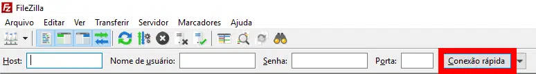

O FileZilla é um software cliente FTP (Protocolo de Transferência de Arquivos) amplamente utilizado para enviar e receber arquivos entre computadores e servidores pela internet. Com uma interface intuitiva e recursos avançados, o FileZilla se destaca como uma das melhores opções disponíveis no mercado.
Neste artigo, exploraremos o que é o FileZilla, sua utilidade, as vantagens de usá-lo, além de fornecer um guia completo sobre como instalá-lo e conectá-lo à sua hospedagem.
Continue a leitura pra saber tudo sobre essa ferramenta, além de aprender a instalá-la e configurá-la no seu computador!
O FileZilla é um software cliente FTP de código aberto amplamente utilizado para transferir arquivos entre computadores e servidores pela internet. Ele oferece uma interface intuitiva e fácil de usar, permitindo que os usuários gerenciem seus arquivos de site de forma eficiente.
Ele é compatível com os principais sistemas operacionais, como Windows, Linux e macOS, tornando-o acessível para uma ampla gama de usuários. Sua popularidade se deve à sua estabilidade, segurança e recursos avançados, tornando-o uma escolha confiável para profissionais da web que precisam transferir arquivos de forma segura e rápida.
Para que esse tipo de software serve?
O FileZilla desempenha um papel fundamental no gerenciamento de arquivos de um site. Ele permite que os usuários realizem diversas tarefas, como fazer upload de arquivos para o servidor de hospedagem, fazer download de arquivos do servidor para o computador local, excluir arquivos, renomear arquivos e pastas, e muito mais.
Ao usar o FileZilla, os usuários têm controle total sobre o conteúdo de seus sites, podendo adicionar ou modificar arquivos com facilidade. Além disso, o FileZilla oferece recursos avançados, como a capacidade de agendar transferências automáticas, realizar transferências de arquivos em lote e sincronizar diretórios locais com o servidor remoto, agilizando o processo de gerenciamento de arquivos.
Além das funções mencionadas, é importante ressaltar a facilidade que os clientes FTP, como o FileZilla, proporcionam. Uma vez instalado e conectado ao servidor da sua hospedagem, iniciar o programa e gerenciar seus arquivos é tão simples quanto um clique.
Essa simplicidade é um diferencial significativo em comparação com o uso de serviços online semelhantes dentro da sua empresa de hospedagem, onde o tempo necessário para acessar essas ferramentas é consideravelmente maior e envolve várias etapas adicionais, como logins, autenticações e busca no cPanel.
Ao utilizar o FileZilla, você ganha agilidade e praticidade no gerenciamento dos arquivos do seu site. Com apenas alguns cliques, é possível transferir arquivos para o servidor de hospedagem ou fazer o download de arquivos do servidor para o seu computador local. Além disso, o FileZilla oferece recursos avançados, como a capacidade de organizar os arquivos em pastas, renomear arquivos e excluir itens indesejados, proporcionando um controle total sobre o conteúdo do seu site.
Outro benefício de usar o FileZilla é a economia de tempo. Ao evitar os procedimentos complexos e demorados de autenticação e navegação por meio de painéis de controle online, você pode se concentrar nas tarefas mais importantes, como atualizar o conteúdo do seu site ou fazer ajustes nos arquivos.
A interface intuitiva e amigável do FileZilla facilita a localização e a manipulação dos arquivos, permitindo que você realize suas tarefas de forma eficiente e sem complicações desnecessárias. Com o FileZilla, o gerenciamento de arquivos do seu site se torna uma experiência simplificada e produtiva.
Quais são as principais vantagens de usar o Filezilla?
Existem várias opções de clientes FTP disponíveis na internet, como Cyberduck, WinSCP e Transmit. No entanto, o FileZilla se destaca no mercado devido à sua facilidade de uso e à variedade de recursos que oferece, o que é surpreendente considerando que é uma solução gratuita.
A simplicidade da sua interface torna o FileZilla acessível mesmo para usuários iniciantes, enquanto as suas funcionalidades avançadas atendem às necessidades dos usuários mais experientes. Combinando usabilidade e recursos robustos, o FileZilla se estabeleceu como uma escolha popular para quem busca um cliente FTP confiável e eficiente.
Além das funcionalidades mencionadas anteriormente, é importante ressaltar a facilidade proporcionada pelos clientes FTP, como o FileZilla. Após a instalação e a conexão com o servidor de hospedagem, você pode iniciar o programa com apenas um clique e começar a gerenciar seus arquivos. Essa simplicidade de uso é uma vantagem significativa, permitindo que você acesse e manipule facilmente os arquivos do seu site.
Mesmo se você estiver usando um serviço semelhante online fornecido pela sua empresa de hospedagem, o tempo necessário para acessá-lo é consideravelmente maior e envolve várias etapas adicionais, como logins, autenticações e buscas no cPanel.
Em contraste, o FileZilla oferece uma solução mais direta e eficiente, eliminando a necessidade de percorrer múltiplos passos para alcançar suas tarefas de gerenciamento de arquivos. Essa praticidade economiza tempo e simplifica o processo, tornando o FileZilla uma escolha conveniente para aqueles que desejam uma forma ágil e descomplicada de gerenciar seus arquivos de hospedagem.
Como instalar o FileZilla?
Para fazer o download do FileZilla, é recomendável acessar o site oficial do projeto em https://filezilla-project.org. Lá, você encontrará os links para as duas modalidades de serviço: o FileZilla Client, que conecta computadores comuns a servidores, e o FileZilla Server, que é instalado em servidores para permitir o acesso por computadores comuns.
Ao acessar a página inicial do site, você verá a seção "Quick download links" com as opções disponíveis. Para baixar o FileZilla Client, que é o que você precisa, clique no link "Download FileZilla Client". Essa escolha é essencial para garantir que você obtenha a versão mais recente e segura do programa.
É importante ressaltar que baixar o FileZilla a partir do site oficial do projeto é altamente recomendado, pois garante a integridade do software e reduz o risco de obter versões adulteradas ou desatualizadas. Portanto, ao iniciar o processo de download, certifique-se de utilizar o link fornecido no site oficial para desfrutar da melhor experiência com o FileZilla.
Como conectar o FileZilla à minha hospedagem?
Uma das grandes vantagens do FileZilla é a sua conexão rápida. Diferentemente de outros clientes FTP, a configuração do serviço no servidor é simples e não requer um conhecimento técnico aprofundado.
Antes de tudo, é importante verificar se a sua empresa de hospedagem oferece acesso aos servidores por meio do FileZilla. Devido à popularidade do serviço, é improvável que essa opção não esteja disponível, mas é recomendável confirmar essa informação.
Os dados necessários para estabelecer a conexão são os seguintes:
Normalmente, esses dados estão disponíveis no dashboard ou cPanel da sua hospedagem. No entanto, em alguns casos, pode ser necessário entrar em contato com a empresa para obtê-los. Isso depende do serviço que você está utilizando.
Com as informações em mãos, basta inseri-las nos campos indicados, localizados logo abaixo do menu superior do programa, e em seguida clicar em "Conexão rápida". Assim, você estará pronto para se conectar ao servidor e aproveitar os recursos oferecidos pelo FileZilla.

Além desse método rápido e fácil de conexão, é importante ressaltar que, dependendo do seu provedor de hospedagem, podem ser necessárias outras ações. Portanto, é essencial verificar os requisitos específicos do seu host.
Após estabelecer a conexão, você terá acesso às pastas do seu banco de dados no programa. Na maioria das instalações com sistemas de gerenciamento de conteúdo (CMS), os arquivos visíveis do site estão localizados no diretório "public_html". É nesse diretório que você provavelmente realizará a maioria dos ajustes e modificações.
Com isso, concluímos nosso guia sobre o FileZilla, e esperamos que as informações fornecidas tenham ajudado você a entender melhor e utilizar essa ferramenta. O FileZilla pode ser extremamente útil na sua rotina e na solução de problemas do seu site, facilitando a gestão de arquivos e tornando o processo mais eficiente.
Caso você esteja enfrentando dificuldades para fazer a conexão e transferir arquivos usando o FileZilla, recomendamos que assista a um vídeo explicativo da HostGator que aborda o processo detalhadamente. O vídeo fornece instruções passo a passo sobre como configurar o FileZilla, estabelecer a conexão com o servidor e realizar as transferências de arquivos.
Assistir ao tutorial em vídeo é uma maneira eficaz de visualizar as etapas e facilitar a utilização do FileZilla para transferir seus arquivos para a hospedagem. Assistir ao vídeo e obtennha assistência adicional.
A Wiki oficial do FileZilla é uma fonte de documentação em inglês que oferece guias, tutoriais e respostas para perguntas frequentes sobre o software. É um recurso valioso para obter suporte adicional e aprofundar o conhecimento sobre o FileZilla. Acessando o link fornecido, você encontrará uma variedade de informações úteis para resolver problemas e aproveitar ao máximo o FileZilla.